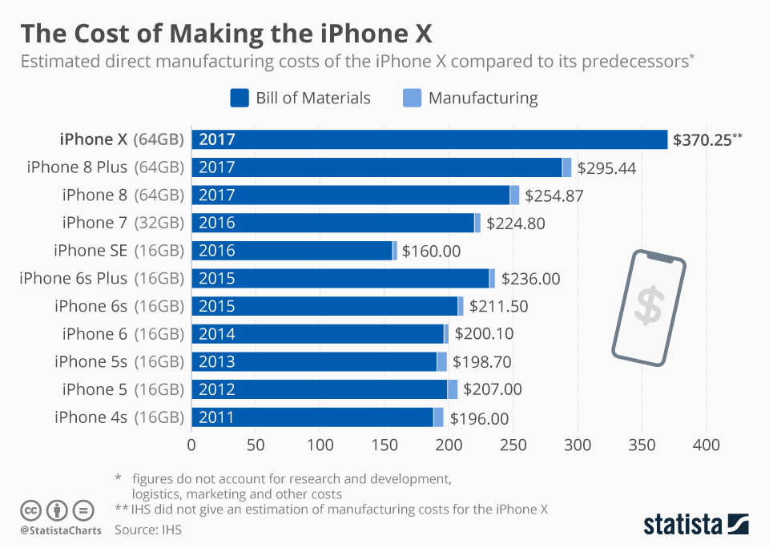

Apple, will bad practices lead to their downfall?
over-pricing and Anti-consumerism
Is there even a reason to buy apple products?
No one would argue with you if said Apple is one of the biggest companies in the world, in fact up until recently it was the biggest company in the world, it was only taken off the spot of the most valuable company by Microsoft. However, a topic that is not often mentioned is the practices that able do that can range from annoying to downright anti-consumer.
Let’s start off by talking about the prices of Apple products. It’s no hidden secret that the prices of Apple products are more than what they are actually worth. But the actual markup of these products might surprise you. According to venturebeat.com the Apple Watch Sports 38mm, which at the launch of the product could be purchased for 349$, only cost a total of $83.70 to manufacture. And another shocking statistic (from Statista) would be the manufacturing cost of the iPhone 10, which only cost 358$ (see picture A) dollars to make and retailed for the grand total of 999$. Note that a full list of statistics of Apple product costs can be found at Technology IHS.
Another argument people bring up to counter the point that Apple overcharges their consumers is the fact that they claim that Apple's products are the best. However, in some cases, this is just not true. Let’s compare some of Apple's top of the line products to what you can get if you don’t want to pay the apple tax. To start this off let's talk about the iMac pro, which is currently Apple's most powerful product. With an 18-core Xeon CPU that boost up to 4.3ghz, a vega 64 with 16 gigs of hbm2 memory (figures from Apple’s website), you might be mistaken in thinking that the iMac pro is unmatched. Unfortunately, when you take a better look into the components of the iMac pro you realize that it's not actually anything that you can’t just buy, and not only that, If you build your own computer you would be able to make a more powerful and even cheaper computer. Furthermore, building your own pc will allow a lot more customization in terms of the price point and specific components that someone might want.
Right to repair
We can compare apple products to other technology all day long, but let’s move on to the second subject, Which is perhaps even more malicious than the previous subject. I’m talking about the apple repair program. For anyone who is unfamiliar with this subject, what I'm talking about is the cost of repair your broken and damaged apple goods. So here is an example of a totally possible hypothetical. You accidentally break the screen of your already overly expensive iPhone and unfortunately, it just ran out of warranty so you go into the apple store and try to have it fixed. Well, The process that you are about to undergo can cost up to 429$ for your new iPhone XS max. You might think this is just Apple trying to make you buy their protection plan if that was the case then this issue would be quite small, as Apple is just being a bit stingy. However, the issue is much bigger than just that. According to a CBC investigation in some cases, Apple doesn’t even fix your devices. They would rather have you buy a new device so that they could earn more money.
try to have it fixed. Well, The process that you are about to undergo can cost up to 429$ for your new iPhone XS max. You might think this is just Apple trying to make you buy their protection plan if that was the case then this issue would be quite small, as Apple is just being a bit stingy. However, the issue is much bigger than just that. According to a CBC investigation in some cases, Apple doesn’t even fix your devices. They would rather have you buy a new device so that they could earn more money.
Now that you understand the state of Apple's horrible repair program you might think, “ that’s fine I’ll just use a solution that doesn’t involve apple.” Unfortunately, To make matters worse apple would not even allow third parties to fix your products or even. Their argument for not allowing you to take your phones to repair shops is that they were the OEM (short for original equipment manufacturers) and therefore, they can essentially force their monopoly onto their customers. Apple enforces this monopoly by making it illegal for third parties to buy spare parts for their products and even taking down websites that give you guides as to how to fix your products on your own. The argument that many people who disagree with Apple's practices makes is that once you’ve purchased a product you should have the right to do want ever you want with it without being controlled by Apple.
In conclusion,
I can talk all day about Apple’s vehement stance against the consumer when comes to consumer rights or overpricing. But at the end of the day, Apple will not be challenged for ripping off the consumer, but nothing will change. People buy apple products for because they are expensive and overpriced, not because they view them as better than the competition but because they view it as a statement of their wealth and their social status.
PS: all figures that included currency were done using American dollars. Please do your own research into all the subjects that are talked about in this article, links to all sources are provided down below for you to download. If you have any concerns about the article please leave a comment.